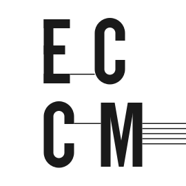
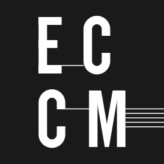
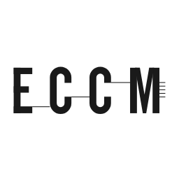
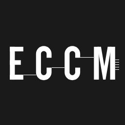
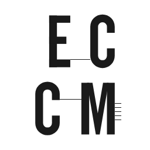
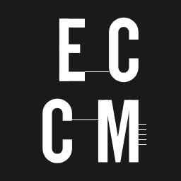

One family, Schibsted Grotesk. Headings are weight 400 and the hierarchy comes from size and space, never from bold or from a rule. On a page whose scheme is derived from its picture, Newsreader takes the headings when the picture's own type reads as serif, and the body only on a ground near white.
Tööprotsessi viimane hetk, võimalus olla tunnistajaks kolme osaleja koosmõjus tekkinud olukorrale.
An event title, h1
Gestuurid/situatsioonid: ilma partituurita kuulamine. Marianna Liik, Artjom Astrov, Maryn-Liis Rüütelmaa
Prose: paragraphs, a heading, a link, the small register
Avalik žest ei ole valmis teose esitlus ega klassikaline kontsert. See on kümnepäevase protsessi viimane hetk, võimalus olla tunnistajaks olukorrale, mis on tekkinud kolme osaleja koosmõjus ja mida ei saa korrata täpselt samal kujul.
Vahepealkiri proosas
Kõigile, keda huvitab heli, mis ei ole komponeeritud, ja kes on valmis kuulama ilma partituurita. Vaata ka kujundust pildist.
Väike register, mida kannavad jalus, kuupäevad ja sildid.
Serif, on a page whose picture reads as serif: title, facts and credits in Newsreader, and the body too on a ground near white
Sound Plasma 10
Millal
Kus
Mustpeade maja valge saal, Pikk 26, Tallinn
Sound Plasma 10. juubelikontserdil kohtuvad Tallinna Uue Muusika Ansambel ja defunensemble. Kümme aastat mikrotonaalset muusikat, kaks ansamblit ühel laval ja üks õhtu, mida ei saa korrata.
Esinejad
Tallinna Uue Muusika Ansambel, defunensemble
Graafiline disain
Jaan Evart
The same on a dark derived ground: title, facts and credits keep the serif, the body stays in the sans
Uus kontserdisari: Up to Three / Kuni kolm
Millal
Kus
ECCM saal, Pühavaimu 9, Tallinn
Kuni kolm esinejat, kuni kolm teost, kuni kolm veerandtundi. Sari, mis mahub ühte õhtusse ja jätab ruumi vestluseks.
Artist bios: after the body and before the credits, the name an h2 in the prose register, the paragraphs at the measure, the link the last line, three steps of space between bios and one within, a square photo at 5.5rem beside the name when a row has one
Alissa Šnaider
Alissa Šnaider on kunstnik, koreograaf, dramaturg ja kuraator, kes tegutseb nii etenduskunstide kui visuaalkunsti valdkonnas.
Tema looming hõlmab nii koreograafiat, lavastamist, fotograafiat kui ka kirjutamist. Oma praktikas käsitleb ta žesti mitte pelgalt väljendusvahendina, vaid tegevusena, mis konfigureerib tähelepanu, aja ja kehade vahelisi suhteid. Selle asemel, et luua kindlaid vorme, tekitab ta olukordi, milles kohalolu, viivitus, nihestatus ja haavatavus jäävad aktiivseteks seisunditeks.
Alissa on aktsioonidesarja „Gestuurid/situatsioonid“ algataja ning käesoleva versiooni puhul on tegemist algse gestuuride formaadi edasiarendusega, mille raames luuakse performatiivseid olukordi, mille keskmes on risk, mittekoordineeritud olek ja kuulamine. Projekt toimib teisaldatava struktuurina, mida aktiveerivad erinevad osalejate kooslused ja nende kontekstispetsiifilised žestid.
Tema visuaalne looming laiendab neid olukordi, käsitledes pilte pigem tegevuse jäägina kui kujutistena. Kirjutamine toimib tema loomingus väljendus- ja sekkumisvahendina, saates protsesse ilma neid stabiliseerimata.
Ta tegutseb rahvusvaheliselt nii kunsti-, kuraatori- kui ka dramaturgilistes kontekstides.
Jaan Evart on graafiline disainer, kelle käe all on sündinud sarja „Gestuurid/situatsioonid“ kujundus. Ta töötab trüki ja ekraani vahel.
Color
White is the material and type is the object. Every pair is computed against white and color is never the only cue: the accent sits only on an underline under the pointer and on the focus ring.
--eccm-ground #ffffff
--eccm-ink #1a1a1a, 17.40:1
--eccm-ink-2 #555555, 7.46:1
--eccm-rule #d9d9d9
--eccm-rule-strong #999999, the link's line
--eccm-accent #b3400f, 5.74:1
A page derived from its picture sets the same roles with its own tokens: --ev-ground, --ev-ink, --ev-ink2, --ev-accent, --ev-btn-fill, --ev-on-btn, --ev-title-face, --ev-title-weight, --ev-body-face. The examples are on the design from a picture page.
Space
One scale, and no number that is not on it. There is always more space around a group than inside it, by at least two steps.
--eccm-s-1
--eccm-s-2
--eccm-s-3
--eccm-s-4
--eccm-s-6
--eccm-s-8
--eccm-s-12
--eccm-s-16
--eccm-s-24
--eccm-gutter1rem, 2rem on a deskthe frame's edge.framemin(100% - 2 * gutter, 72rem)the page frame--eccm-pic-w300pxthe list picture, at its own size--eccm-mark-w20rem, 11rem on a phonethe mark in the header
Buttons
A word in a 3rem box ruled in ink, no radius, no shadow, always in the system face. Two modes: regular, ruled, and inversed, filled, each with a disabled state at 45 per cent that takes no pointer. On a page derived from its picture the button reads that scheme's tokens, with the page's own as the fallback.
The square mark, no tagline, for icons and avatars, positive and negative. Its outlined, plain (48 and 64 px) and bold (16 and 32 px) variants are files under icons/, one each, drawn for the sizes where hairlines or thin stems stop working.
logo-square.svglogo-square-neg.svg
The stacked alternative, EC over CM: the rows share one left edge, two stems apart, the first row spread to the block's edges, the E over the C and the C over the M with the join drawn across the gap, the block centred in the square, the stave at its own width, and the join that crossed from the first C to the second dropped, since the rows part it.

logo-stack.svg

logo-stack-neg.svg
The icon sizes: 16, 32, 48, 64, 128, 180, 192, 256 and 512, and a favicon.ico holding 16, 32 and 48. From 128 up each size is its own drawing with the hairlines snapped to whole pixels on an integer pitch, which is what keeps five stave lines one shade; at 48 and 64 the hairlines are dropped and the M is 12 units wider with its arms a stem wide, so its counters open; at 16 and 32 the letters are the bold set, stems of 20 units, the way eccm.ee's own favicon fills its square. At 16 a stem is 0.6 px and the letters are still four blobs; a true 16 px mark with whole-pixel strokes is a decision not taken here.
16324864128180

256
16324864128180

256
16324864128180

256
16324864128180

256
Wordmark
Instrument Sans medium at width 75, lowercase, two lines a language, starting on the E, both languages at one size: under the mark at 40 units, one language or both, and beside the mark at 37 units after 28 units of air, one language or both side by side; each lockup plain, in a bordered frame and white on black, at 11rem of mark width.